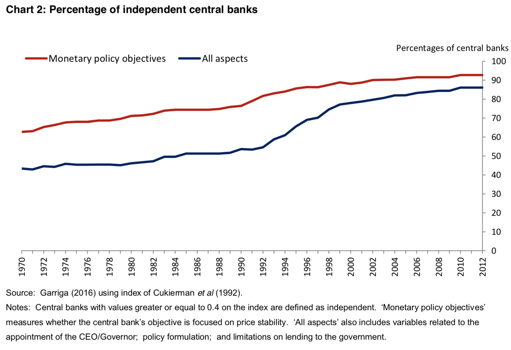
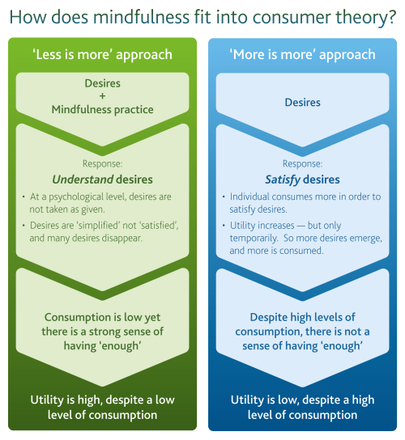

Reposted from the Mandarin
I
In our contemporary lexicon 'independence' – for instance of a government body – is usually a Good Thing. [1. other Good Things include 'appropriate', 'modernised', 'reform', 'enhance', 'principled' It's sobering to realise how rhetorical we are. There's usually a way of saying something to make it sound very positive or very negative. Today debates between the Government and Oppositions of the day often get down to a war of adjectives of choice. Is the Minister being Strong and Principled, or Inflexible and Stubborn? And on it goes. Anyway, independence, in central banks at least has been very popular in recent decades.

Chart From: A Little More Conversation A Little Less Action, Speech given by Andrew G Haldane, Chief Economist, Bank of England, 31 March 2017.] But if we're thinking of independence as a good thing for an agency to have – for instance the Productivity Commission (PC) – it's not sufficient. It also needs to be used by the agency, and the agency must be worthy of it by virtue of the quality of its work. The odd thing is that so many such agencies have such a strong flavour of bureaucracy about them. There's the same cultural emphasis on what I call being a sound chap. I've come to think that this is a kind of natural product of groups. They are … well … groupish. They acquire the same kinds of social dynamics you notice at high school when nearly everyone wants to be one of the cool kids. But in government there's an institutional basis to this also. Even if they have their own act, even if their independence is prized in our public culture, most government statutory agencies are tethered to the career public service. Their officers enjoy the privileges of the Commonwealth public service career structure. So we should not be so surprised that those in such independent agencies think like bureaucrats. And there are few things more important to bureaucrats than appearing to be in control. To be thought of as sound chaps. That means that what independence has been successfully cultivated is both highly specific and highly acculturated. Gradually from the 1960s on initially under the bureaucratic leadership of Alf Rattigan, a new orthodoxy grew in favour of freer trade, then free trade and then freer markets. The PC's 'independence' was built around this.[1. And that of its predecessor institutions – the Rattigan Tariff Board, the IAC and the IC.] It was independence to pursue free trade. Likewise, the RBA's independence is about setting monetary policy. As a senior officer of such a body, you might occasionally annoy the politicians in power and sometimes even other powerful people in the bureaucracy, but if you hiked rates when it was inconvenient, you were still a sound chap – indeed, this was evidence that you were the soundest of all chaps, answering to the institutional logic of your institution – and its role read within the intellectual orthodoxy. This is a fortunate, alchemical trick in which institutional courage is founded on the quiet careerist culture of bureaucracy. In this sense, to put it in its best light, independence can breed courage in the institution while economising on its presence within individuals in the same way that markets are said to meet social needs while economising on altruism. But this independence is mainly about being 'tough' when the imperatives of day-to-day political and bureaucratic management might favour sweeping inconvenient things under the carpet. Any intellectual leadership that one might hope for from this independence seems largely confined to the terrain that's already been marked out in advance for the institution.II
Just as Thomas Kuhn distinguishes between normal science and the 'revolution' of moving between paradigms, [1. Kuhn, it turns out, didn't coin the term "paradigm shift".] according to my account of independence, it is generally for 'normal' purposes – setting interest rates (RBA), tariffs (Tariff Board and IAC), making weather forecasts (BOM) or economic predictions on the fiscal cost of alternatives in the case of the PBO. But here's the thing. There will come times when, to do it's job well, an independent agency will need to be bolder. The PC is seeking to rise to this challenge of rethinking things, and thinking in ways it hasn't in the past in a number of its inquiries such as its recent report on Data Availability and Use. Still, expecting 'paradigm change' from government agencies somehow reminds me of the cartoon of a man playing chess with a dog in a park with the man saying to amazed onlookers "But I can beat him". What we should hope for I think is an independence which is more humble – less preoccupied with the bureaucratic 'steady-as-she-goes, the adults are in charge' role-playing – and more prepared to lead the process of intellectual search. Certainly that's what I'd expect from central banks given how much money and independence we lavish on them – and, more to the point, how little we really understand either how to run the macro-economy or how to construct a healthy monetary and banking system [1. (to say nothing of our ignorance of the great micro-economic trends of the coming decades – like the impact of AI, the path of productivity growth and the distribution of the dividends from it – and how we might influence them for the better.)]
III
There's only one institution I know of that's like this. The Bank of England. Here's a list of some of the more interesting research it's published in the last six or so months.
- Monetary and macroprudential policies under rules and discretion
- Sovereign GDP Linked bonds,
- Systematic risk in derivatives markets,
- An interdisciplinary model for macroeconomics,
- The Economics of distributed ledger technology
- Machine learning at central banks,
- Sending firm messages: text mining letters from PRA supervisors to those they regulate
- The Bank of England as lender of last resort: new historical evidence from daily transactional data [1. This is a fairly standard research topic but is handled in a way that weighs in very effectively on contemporary post-GFC debates.]
Our RBA's discussion papers seem a lot less exploratory. Here's the full list for 2017.
- Uncertainty and Monetary Policy in Good and Bad Times
- The Property Ladder after the Financial Crisis: The First Step Is a Stretch but Those Who Make It Are Doing OK
- How Australians Pay: Evidence from the 2016 Consumer Payments Survey
- Financialisation and the Term Structure of Commodity Risk Premiums
- Anticipatory Monetary Policy and the ‘Price Puzzle’
- Gauging the Uncertainty of the Economic Outlook Using Historical Forecasting Errors: The Federal Reserve's Approach.
Bank of England Speeches are often a lot classier, more educated and urbane than I'm used to from most Australian policymakers. That's true of virtually all speeches by Andy Haldane my favourite public servant in all the world, but for another example, try this speech:
Though in some ways perhaps not an ideal model [for the Bank of England's – Financial Policy Committee], the Committee of Public Safety showed in its short life – two hectic years from foundation to collapse – that policy committees can make a difference.
IV
Then there's the Bank of England blog, Bank Underground, in which Bank officers explore all sorts of interesting questions with the usual disclaimers that their views are not necessarily those of the Bank. Indeed, though it was in the context of the Government 2.0 Taskforce, our own modelling of and support for blogs for public sector agencies was, at least in my case, inspired far more by my view of what it is to think effectively than it was for the greater good of 'transparency' in government. [1. To put it differently, transparency in thinking is fundamental to thinking itself – as we've seen from the rise of science which is predicated on transparency and critique. Indeed in government, while the right degree of transparency is necessary for good government – it is not an absolute value. There are limits arising from the inevitable dilemmas and conundrums. In any kind of deliberation under our system, there must be some forum in which people can deliberate privately and provisionally. Deliberation is not performative. Without necessarily defending the specific balance we have struck in this regard, cabinet papers are secret for a good reason. Secrets might arise as part of science, but as the upshot of competition between scholars. They are not logically necessary to science itself and in some sense are naturally inimical to it.] It's been a source of great disappointment to me how timid the public sector has been in embracing blogs to report and further the lines of inquiry public servants are considering, particularly those in policy research positions. Though line departments have some excuse and, if they did it would need to be more circumspect, I can't see any excuse for the many agencies that have independence and research departments. Blogs can engage with the wider community about tentative lines of inquiry and concern without necessarily proposing or even discussing proposed policy proposals. The Bank of England blog is both a record of, and I have little doubt an engine of a more engaged intellectual life than exists in most similar policy shops. Quite a few of the posts are digests of research papers – some of which are very interesting as I've suggested above. Others are more exploratory. Perhaps as part of writing a research paper, perhaps not, one looks at whether the crisis of attention is harming the economy. Another explores the importance of second order preferences (that is the extent to which we exercise agency in developing some preferences over others) which seems to me to be about the most important 'meta-question' in micro-economics. Adam Smith devoted his first book The Theory of Moral Sentiments to it. But it's invisible in the neoclassical framework lest, on being given visibility it blows up the whole edifice. [1. I greatly lament the choice to lump this discussion in with 'mindfulness' which, in the piece is then pretty directly related to meditation and Buddhism. The considerations in the piece were quite central to the economic thinking not just of Smith but also of Marshall, Pigou and Keynes to name just a few and when I last checked none of them were Buddhists or mediated.

] Beyond blockchain: what are the technology requirements for a Central Bank Digital Currency? and The Dog and the Boomerang: in defence of regulatory complexity are others. Sadly there's very little of this in Australian policy making. Indeed even the Grattan and Mitchell Institutes don't seem to have a blog, preferring to 'publish' their minor outputs as little performance piece op eds in newspapers – but this serves a quite different function. The Lowy Institute on the other hand does have a very lively blog.V
For me anyway, the contrast between two kinds of independence couldn't be more clearly on display than in Governor Philip Lowe's recent speech on an e-AUD?. To which I'll return in due course.
I found this an interesting aside from Larry Summers, regarding the case for CB independence (and implicitly the prospect of other independent agencies):
"It is insufficient to argue that “experts are better than politicians.” Democracies normally entrust matters ranging from regulating nuclear power to prosecuting criminals to granting patents to managing wars to officials who report directly or indirectly to heads of government."
http://larrysummers.com/2017/09/28/central-bank-independence/
Sorry - that was half a comment. My point I guess is that in Australia there seems to be a broadly held presumption that it would be desirable for any given policy issue to be delegated to an independent agency. I don't share that view.
I like the idea of having foreigners decide on important matters and Australian experts deciding on foreign matters. Domestic regulators get captured, a pool of foreigners is harder to capture. You see this in international sports matches.
Apart from that, I really love the title "Now is the time for complacency". So pithy.
Thanks for the reference to Summers Matt.
I'm not arguing for independence per se here, just ruminating on what it's used for. I think some of the arguments against independence are reasonable. But I don’t think much of Summers arguments on this occasion.
He seems to associate independence with hawkishness and then says that inflation is too low. Well if central banks are missing their inflation targets on the downside they're simply not following the policy.
Summers says this "First, after a splurge of indiscipline following the breakdown of Bretton Woods, politics seem to have internalized anti-inflation norms so insulation from politics is less important. It is noteworthy that in the US, Europe and Japan political criticism of central banks comes much more from the hawkish side than the dovish side."
This suggests that leaving monetary policy to politicians or at least to political culture is likely to undershoot a reasonable inflation target – which is not surprising given that reading the daily press is a poor way to learn how to meet an inflation target.
So properly behaved independent central banks would, in these circumstances, be more expansionary than popular opinion would allow. Of course you can argue that it's endemic to econocrat culture that econocrats will not be, in this sense 'properly behaved'. That they'll sit around while they undershoot inflation targets. Certainly the RBA has done that, but there's been no democratic push to cut rates further than the RBA has been prepared to. In the meantime the Australian Federal Treasury threw the switch vigorously in 2008-9. But because it wasn't independent, because it's analysis and advice wasn't public, it was easy for the Opposition of the day to tar the government with the 'spending like a drunken sailor' tag.
In all my arguing of the case for greater independence – for instance in this op ed – I've always argued a symmetrical line that there will often be circumstances where independence can – and should – support a more expansionary policy than readers of the Daily Tele and the Australian would support.
In that sense it seems to me that both the hawks and the doves on independence all assume that independence is for being tough. It's also for easing policy when a government will be pilloried for doing so.
Mick I want to totally agree on blogs. The Bank Underground is a wonderful blog to read. Similarly the Lowy blog is very good to.
The Regional Feds have blogs as well which have very useful abd educative articles.
More of them I say.
I agree Paul and I think this is posited in Cam Murray's recent book. We should be at least expecting that we have foreign recommendation or research done to guide our decisions. Which I think is maybe a little more likely to achieve.
Reminds me of the The Glass Bead Game too. Herman Hesse's novel in which a group of bright young children are removed from a society that they are then brought up to govern later in life.
Nice! The information I got through this blog has really helped me in understanding this now is the time for complacency: rba v bank of england edition That was something, I was desperately looking for, thankfully I found this at the right time.